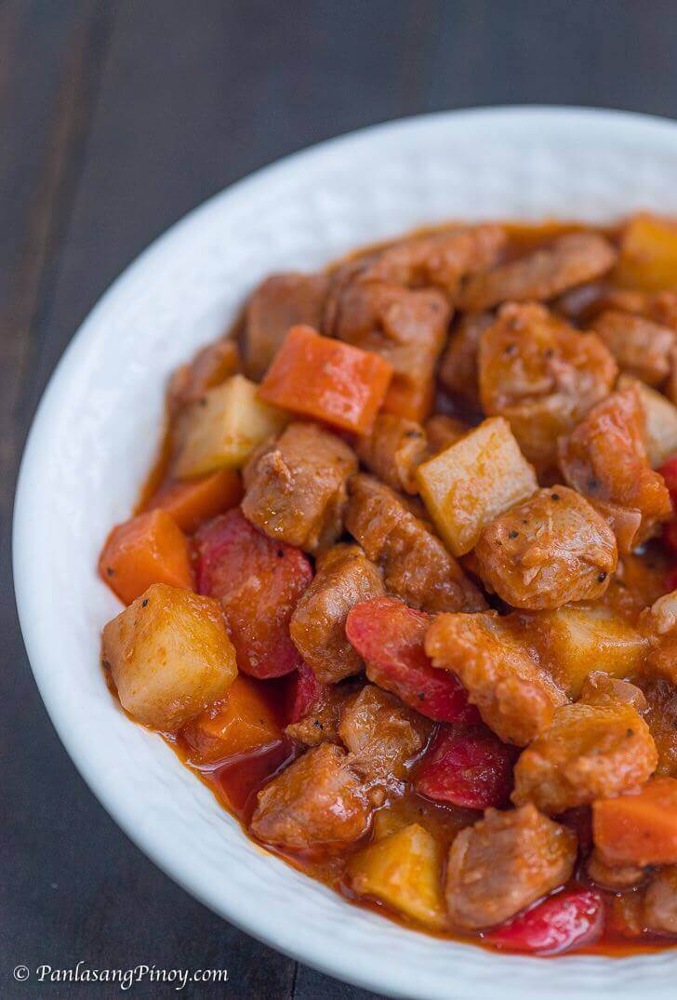

Menudo
Home

Pork Menudo is the number one on the list of my comfort foods and it’s
hard for me to last a month without trying one – literally. Some would say
that I am addicted to this food while others would use the term
“obsession”, I just simply look at it as a necessity – a basic necessity
that I cannot live without.
Ingredients
- 2 lbs. pork
- 1/4 lb. pig liver
- 1 cup potatoes diced
- 1 piece carrot cubed
- 1/2 cup soy sauce
- 1/2 piece lemon
- 1 piece onion chopped
- 3 cloves garlic minced
- 1 teaspoon sugar
- 3/4 cup tomato sauce
- 1 cup water
- 4 pieces hotdogs sliced diagonally
- 2 tablespoons cooking oil
- 2 to 3 pieces dried bay leaves
Salt and pepper to taste
Steps
-
Combine pork, ginger, garlic, onion, Thai chili pepper, long green
pepper, and bagoong alamang, coconut milk in a pan. Mix well. Cover the
pan and turn the heat to on. Let the mixture boil.
-
Stir and adjust the heat to low. Cover and simmer for 50 minutes. Note:
add water as necessary
-
Add the remaining coconut cream and bagoong alamang (as needed). Season
with Maggi Magic Sarap. Continue cooking in low heat until the sauce
thickens (around)
- Transfer to a serving plate and serve with warm rice.